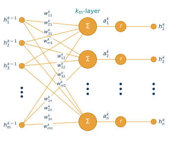

Exercise 7 — Neural network from scratch
Write backpropagation yourself, generalize it to any number of layers, turn it into PyTorch step by step, then grow your network into a blood-cell classifier
When to use AI agents
- Tasks 1–5: work without AI agents. Write and understand the code yourself. Use the formulas, the step comments in every cell and teacher help.
- Task 6: use your coding agent. Have it extend your own network from Task 4 into a deeper classifier, run the experiments and generate the report.
- Your review is your own work. Check the agent’s output and write
REVIEW.mdyourself; do not ask the agent to write it.
▶ Open the notebook in Google Colab ↓ Download the student notebook
What you will build
- One neuron, by hand and then in NumPy, trained by SGD and checked against the closed-form least-squares solution.
- The forward pass, backward pass and mini-batch training loop of a two-layer network as one plain script, in the matrix form of the lecture, verified by a numerical gradient before the first epoch.
- The same network as functions with a loop over the layers, so that it can have any number of layers — with the same numbers as your script.
- The same network in PyTorch: autograd instead of your backward pass, an optimizer instead of your update — again with the same numbers.
- With an agent: your own network, deeper, classifying microscope images of blood cells — NumPy only.
You receive data generation, plotting and the checks. You write the computations; every cell you complete has short step comments, and the notebook states the numbers you should get.
Before the lab
- Re-read the lecture: the artificial neuron, the activation functions and their derivatives, the derivation of a single neuron, the matrix syntax, the forward / backward / update recipe of a general net, Adam and the cross-entropy loss. The notebook uses the same symbols (\(\mathbf h_0\), \(\mathbf a_k\), \(\mathbf h_k\), \(W_k\), \(\eta\)).
- Make sure you are comfortable with
@(matrix product),*(element-wise product),.T,.reshapeand.shape— backpropagation bugs are almost always shape bugs. - Bring the laptop and coding agent from exercise 5. Check that your agent starts and
gh auth statusconfirms your GitHub login. - PyTorch only at the end, and only to replace what you have written yourself: by then you know exactly what it computes for you. In Colab it is preinstalled.
Tasks
| Task | Your result |
|---|---|
| 1. One neuron by hand | A forward pass, a gradient and one update on paper, then in code |
| 2. One neuron in NumPy | Your SGD loop, the closed-form comparison and a numerical gradient |
| 3. A two-layer network | One plain script: forward pass, backward pass, update, mini-batch loop |
| 4. Any number of layers | Your script as functions with a loop over the layers: the same curve for two layers, then a deeper network |
| 5. From your code to PyTorch | Autograd, then an optimizer, with the same loss curve |
| 6. Agent extension | Your network on blood-cell images — the compulsory hand-in |
1. One neuron by hand
The laptop stays closed. One neuron with two inputs, no bias, and the squared-error loss \(L = \tfrac12 (\hat y - y)^2\):
| symbol | value |
|---|---|
| \(x_1\) | \(1\) |
| \(x_2\) | \(2\) |
| \(w_1\) | \(0.5\) |
| \(w_2\) | \(-0.25\) |
| target \(y\) | \(1\) |
| learning rate \(\eta\) | \(1\) |
- Compute the inner potential \(a = w_1 x_1 + w_2 x_2\).
- For the linear activation \(f(a) = a\): the prediction \(\hat y\), the loss \(L\) and the gradient \(\nabla_{\mathbf w} L = (\hat y - y)\, f'(a)\, \mathbf x\).
- The same for the sigmoid, \(f'(a) = f(a)\big(1 - f(a)\big)\).
- One step \(\mathbf w \leftarrow \mathbf w - \eta \nabla_{\mathbf w} L\) of the sigmoid neuron, then the new \(a\), \(\hat y\) and \(L\) — did the loss go down?
Why is the sigmoid gradient eight times smaller than the linear one, although the input, the target and the loss function are the same? Then write the same formulas in NumPy and reproduce your paper.
2. One neuron in NumPy
A linear neuron with one input is linear regression. Write the whole SGD loop — epochs, reshuffling, per-sample update, the loss curve — on 100 noisy samples of \(y = 0.5x + 2\). Compare the result with np.linalg.lstsq, and explain why SGD with a constant learning rate only gets close. Then compute the gradient both analytically and by a central difference.
3. A two-layer network
ReLU hidden layer, linear output, one sample per column. Write the network as one plain script, line by line: first the forward pass, the loss and the backward pass for one mini-batch, then the same lines in a training loop with the update. The supplied gradient check compares your backward pass with finite differences on every parameter before you train with it.
This is the slide “General neural net — each layer and NN learning” of the lecture, with the bias written as a separate vector \(\mathbf b_k\) and the loss averaged over a mini-batch of \(n\) samples (one sample per column of \(\mathbf h_0\)):

Forward, from the first layer to the last, with \(\mathbf h_0 = \mathbf x\) and \(\hat{\mathbf y} = \mathbf h_K\): \[\mathbf a_k = W_k \mathbf h_{k-1} + \mathbf b_k\] \[\mathbf h_k = f(\mathbf a_k)\]
Backward, from the last layer to the first, starting with \(\nabla_{\hat{\mathbf y}} L = (\hat{\mathbf y} - \mathbf y)/n\): \[\nabla_{\mathbf a_k} L = \nabla_{\mathbf h_k} L \odot f'(\mathbf a_k)\] \[\nabla_{W_k} L = \nabla_{\mathbf a_k} L \; \mathbf h_{k-1}^T\] \[\nabla_{\mathbf b_k} L = \textstyle\sum_{\text{batch}} \nabla_{\mathbf a_k} L\] \[\nabla_{\mathbf h_{k-1}} L = W_k^T \nabla_{\mathbf a_k} L\]
Update every layer: \(W_k \leftarrow W_k - \eta \nabla_{W_k} L\), the same for \(\mathbf b_k\).
Here \(K = 2\), \(f\) is ReLU in the hidden layer and the identity at the output (\(f' = 1\)). Every gradient has the shape of what it differentiates: \(\nabla_{W_k} L\) is as large as \(W_k\) — the quickest check of your code.
4. Any number of layers
Your script as functions, with the recipe above and \(K\) as a variable: the weights and biases in Python lists W[k], b[k], the forward pass as a loop from the first layer to the last, the backward pass as a loop from the last to the first. A skeleton with the lists and the loops is given; you fill in the body of each loop. With the layer sizes [1, 128, 1] it must reproduce your Task 3 loss curve exactly; a gradient check on a tiny network with two hidden layers follows, and then you train a deeper network on the same data.
5. From your code to PyTorch
The same lists and loops, with tensors. Replace one piece at a time: first autograd (loss.backward()) instead of your backward pass, then torch.optim.SGD instead of your update. The loss curve stays the same throughout. The training loop is given; you write only the lines that change. A short tour with runnable examples comes first: tensors, NumPy conversion, a gradient with backward() and its accumulation, no_grad(), detach() and the device.
6. Your network on blood-cell images, with an agent
↓ Download everything for the final task (ZIP)
Includes the student notebook, the task with its requirements (TASK.md) and a getting-started README. After extracting, replace the bundled blank notebook with your own notebook before starting the agent.
The practical problem. A blood count with a differential tells a physician how many cells of each type are in the blood. Analysers photograph single cells from a blood smear, and a technician still checks many of them. A classifier that pre-sorts the cells, so that only the uncertain ones need a human, saves real work.
Your extension. The agent starts from your own Task 4 functions — already a loop over any number of ReLU layers — and extends them with a softmax output and the cross-entropy loss, in NumPy only, keeping your conventions (one sample per column, the lists W[k], b[k], the backward formulas of the lecture). The result must pass a finite-difference gradient test on a tiny network, compare a softmax baseline with several network sizes on the validation split, and open the test split only once, at the end. The notebook shows a preview of the data and gives the goal, the graded requirements (each with how you check it in REVIEW.md) and the required files — not a ready-made prompt: writing the instructions for your agent is your job.
Optional editor: if you want to use VS Code on Windows, install it from PowerShell or Windows Terminal:
winget install --id Microsoft.VisualStudioCode --exact --scope user --accept-package-agreements --accept-source-agreementsStart in class: the repository, the invitation, your first instructions, the gradient test and a short trial run. Finish the full run and the review at home.
Data
- Tasks 1–5: no files. Both datasets are generated inside the notebook with a fixed seed, so everybody gets the same numbers — 100 samples of \(y = 0.5\,x + 2\) with Gaussian noise (Task 2) and 150 noisy samples of \(\sin x\) with an outlier at every tenth sample (Tasks 3–5).
- Task 6: BloodMNIST from MedMNIST v2 (CC BY 4.0), one 35 MB file on Zenodo — downloaded by your agent, never committed. The notebook’s preview loads only a 66 kB sample of 32 training images, four per class.
| BloodMNIST | |
|---|---|
| Images | 17,092 single blood cells, 28 × 28 RGB |
| Classes | basophil, eosinophil, erythroblast, immature granulocyte, lymphocyte, monocyte, neutrophil, platelet |
| Official split | 11,959 training / 1,712 validation / 3,421 test |
| Origin | normal cells, Hospital Clinic of Barcelona (Acevedo et al., 2020) |
The classes are not balanced, so report balanced accuracy and per-class recall next to accuracy. The images are small and come from one hospital: the result is a teaching experiment, not a diagnostic tool.
Hand-in
! Compulsory hand-in: complete and submit Task 6 within 48 hours after your lab. Attendance will not be credited unless you complete this requirement.
Create a private GitHub repository mlr-ex07 and share it with MLRteacher: Settings → Collaborators → Add people. A pending invitation is sufficient.
If GitHub CLI (gh) is installed and authenticated (gh auth status), you can simply ask your coding agent:
Use
ghto inviteMLRteacheras a collaborator to my privatemlr-ex07repository. Check the repository owner and confirm that the invitation is pending or access already exists.
Your signed-in GitHub account must have permission to manage collaborators for that repository.
Alternatively, from a terminal:
gh api -X PUT repos/<your-login>/mlr-ex07/collaborators/MLRteacherInclude:
- Your notebook, the network code (
nn_numpy.py),download_data.py,train.py,test_gradients.py,pyproject.tomlanduv.lock. README.md: commands from a fresh clone, dependencies and measured runtime.report.html: the task, the protocol, the result table, the learning curves, the test results and a cautious conclusion; alsoresults.csv,test_metrics.json,runtime.json,learning_curves.pngandconfusion_matrix.png.REVIEW.md, written by you: what you checked, the evidence and what you found, including any fixes, for each requirement listed in the notebook.
Use the validation split for every choice. The test split is for the final result only. What is pushed before the deadline counts. Hand-ins are checked with AI.
! Plagiarism check: all hand-ins will be checked for plagiarism.
The agent may write code and a report; your own review is your responsibility.
Further resources
- Fully connected neural network — matrix calculation — the same matrix form of forward and backward propagation as in the lecture.
- Neural networks — 3Blue1Brown — the classic visual series; the episodes on gradient descent and backpropagation are the ones to watch before this lab.
- A neural net and backpropagation from scratch in NumPy — the code example from the lecture: the same algorithm for any number of layers, with a numerical gradient check.
- MedMNIST v2 — Yang et al., Scientific Data 10, 41 (2023); the source of BloodMNIST.